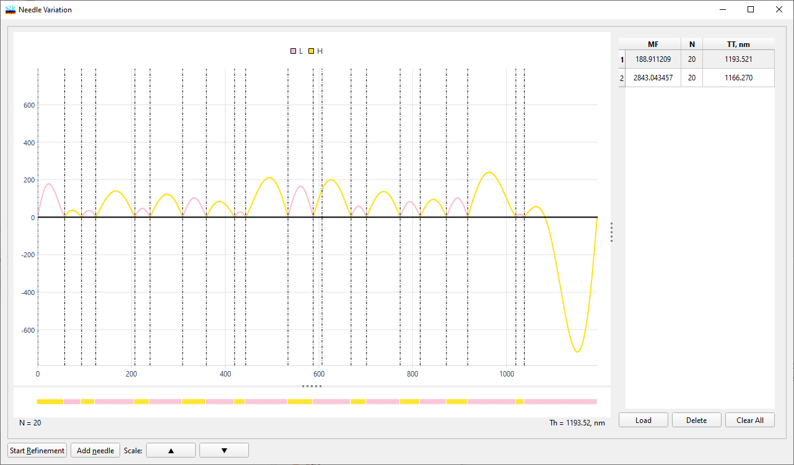
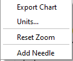

Needle Variation Window
Needle Variation Window
Navigation: OptiLayer Menu Commands > Synthesis Menu >
Needle Variation Window
` <idh_needle_optimization.html>`__ ` <idh_menu_synthesis.html>`__ ` <idh_gradual_evolution.html>`__
The Needle Variation window displays the plot of a special perturbation function, called the P-function, that is used to determine where new layers should be inserted in the current design structure.

The colours of the curves in the display are coordinated with the colours assigned to the specific materials loaded in memory. The colours are either default colours assigned by the program or colours specified by the user in the Design Bar. The Design Bar may be accessed with the Options button. Scaling of the curves in the window can be adjusted with the arrow buttons following the word Scale near the bottom of the window. The Start Refinement starts a refinement procedure after the insertion of a needle.
Add Needle - allows you to manually determine where to insert a new layer in a design. When this command is initiated, a vertical cursor that can be moved with the mouse is displayed in the Needle Variation window. Clicking the mouse button causes a needle to be inserted at the closest optimum position in the design. Following the needle insertion, a dialog box appears that allows you to accept or reject the needle insertion based on the change in the merit function. The choice can be made with the mouse or from the keyboard. The choice from the keyboard can be made by pressing the <Enter> key to insert a layer or pressing <Esc> to abort the insertion. In the latter case, the design remains unchanged.
Scaling of the curves in the window can be adjusted with the arrow buttons following the word Scale near the bottom of the window.
The Right-Click Mouse button opens a pop-up menu that is used in the Manual mode to select an action after the P-function is computed and plotted.
The menu provides the following options for the Manual mode:
Add Needle - The description of this function is similar to the one described above.
Reset Zoom - resets the zoom to the initial state.
Units - Opens the Unitsettings window.
Export Chart - Allows you to save the chart in PNG or SVG formats. 
The Popup Menu invoked by right-clicking provides access to the same menu items as described above.